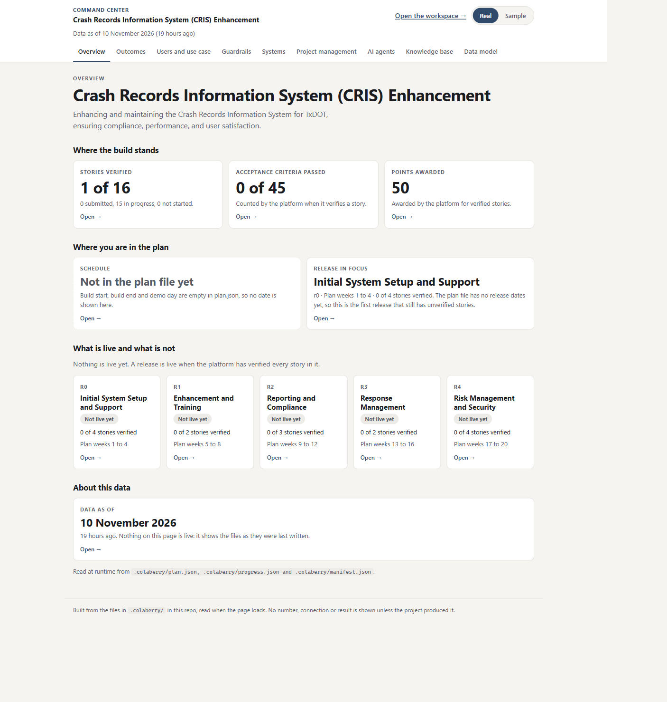
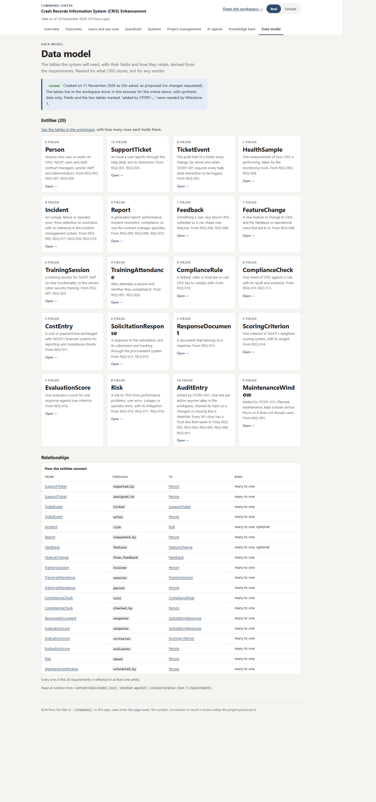
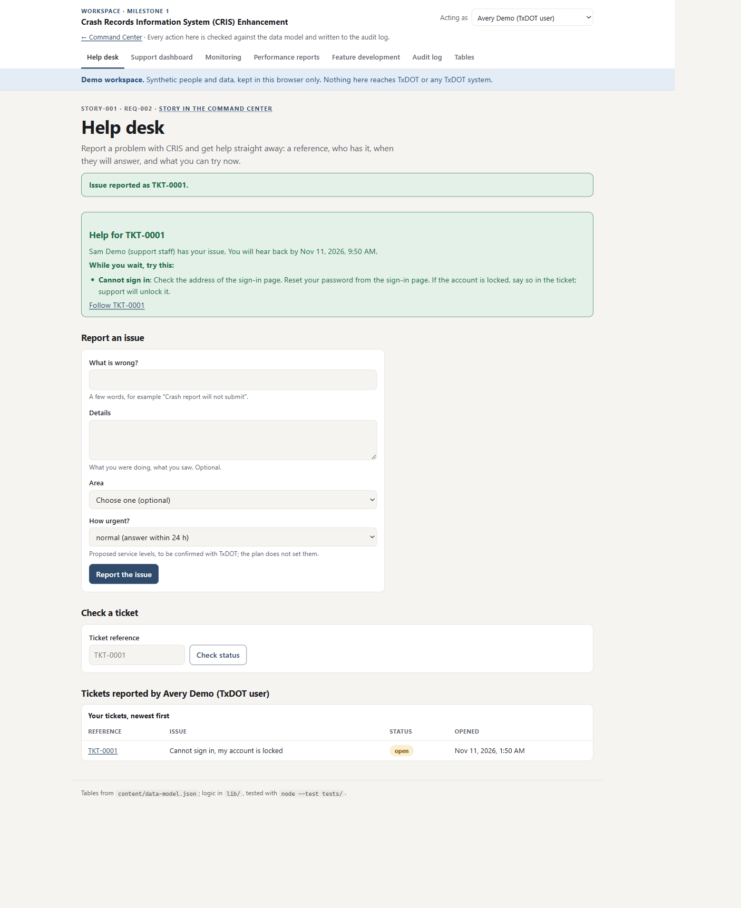
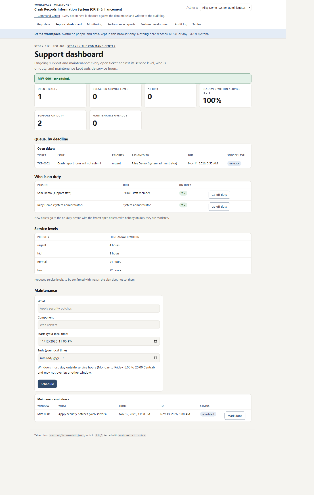
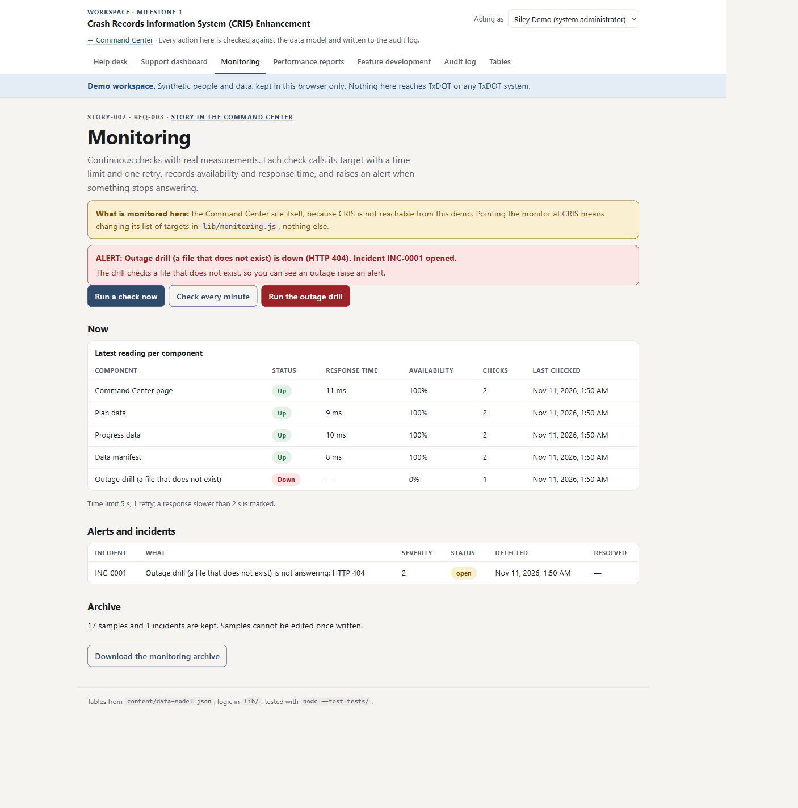
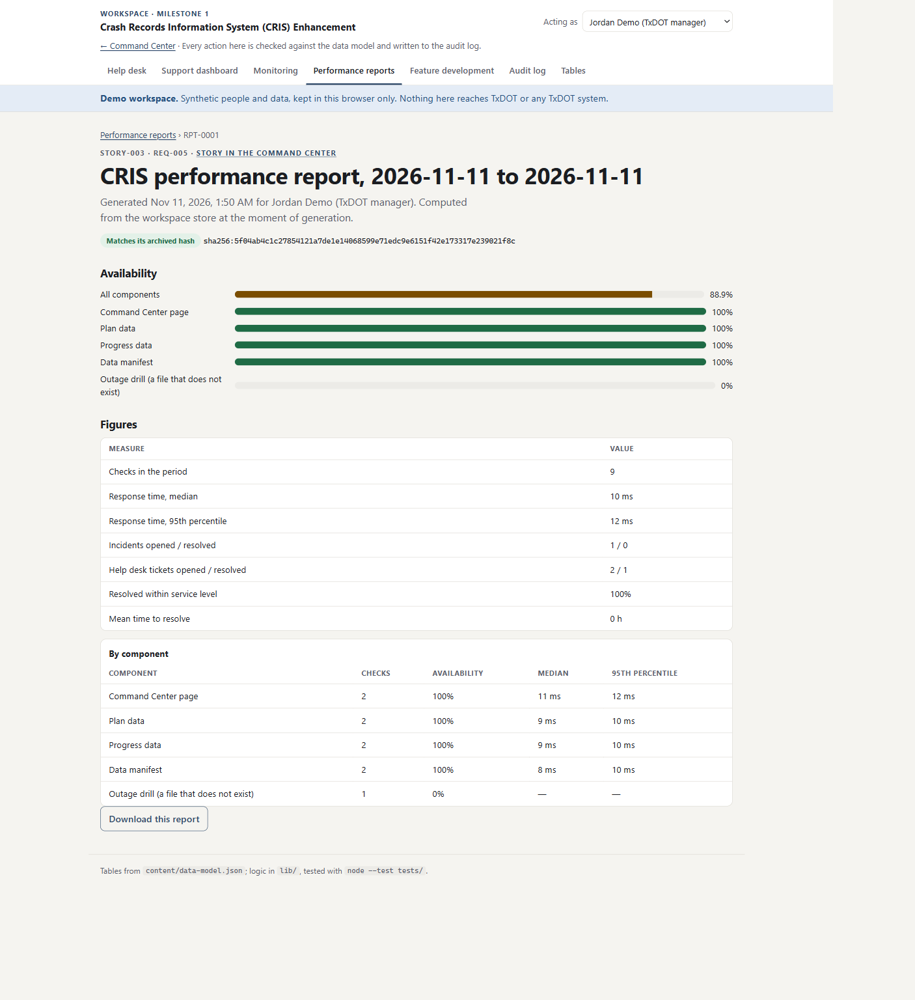
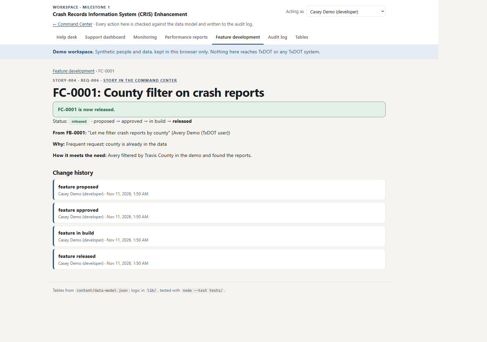
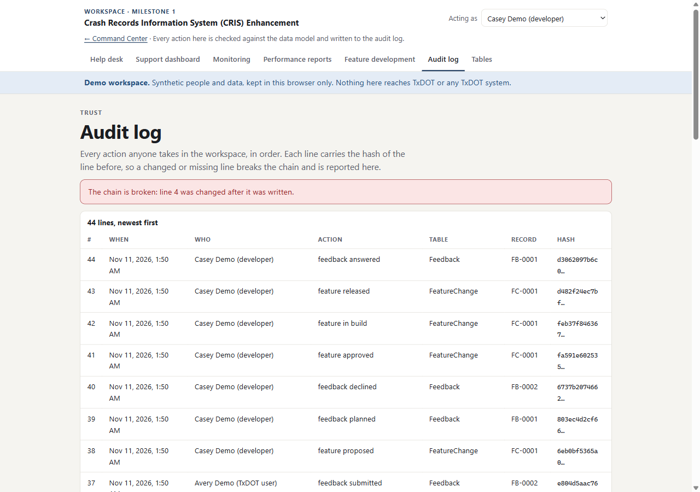

Arrow keys or the buttons move between slides. Everything shown was produced by the project on 10–11 November 2026; the workspace runs on synthetic people and data.
Milestones 0 and 1 · 10–11 November 2026
From an empty folder to a working CRIS workspace
The TxDOT Crash Records Information System service agreement: 16 stories, ship-by 24 November. In two days the portal verified six of them, every one checked against the commit that built it.
6 / 16stories verified by the portal
300points on this build
32unit tests, all passing
13days left to ship-by
The rule
Trust before intelligence
No screen shows a number, a connection or a result the project has not actually produced.
A system we cannot reach stays grey and says "Not checked from here".
A report with no data behind it is refused, with the reason.
Made-up values exist only in Sample mode, labelled on every card.
Every action is written to a log that proves it was not changed afterwards.
Milestone 0 · STORY-000
The Command Center: one page for the whole build
9 tabs and 67 cards, each opening its own page.
Reads the plan and progress files at runtime; nothing is typed into the code.
Warns when the data is more than a week old.
Verified by the portal on 11 Nov, 50 points.

The Overview, live on GitHub Pages
Data model
Eighteen tables created as proposed, two added by need
No changes were requested, so the model went in as proposed.
AuditEntry added: every Milestone 1 story has a Trust line about logging.
MaintenanceWindow added for the support and maintenance story.
Every write is checked against these tables before it is stored.

The Data model tab now reads "Created"
STORY-001 · Help desk
9:00. Avery is locked out of CRIS
Avery reports the issue in a few words and marks it high.
Avery gets a reference, the person who has it, and a deadline: 8 hours.
The matching help article appears straight away.
A double click still makes only one ticket.

Assistance the moment the issue is reported
STORY-012 · Support and maintenance
Sam works the queue against the clock
Each ticket shows on track, at risk or breached.
The ticket is resolved within its service level: met
A 10:00 maintenance window is refused: it would disrupt users.
23:00 to 01:00 is accepted. Overdue work is flagged.

Service levels are proposals until TxDOT confirms them
STORY-002 · Monitoring
Riley's monitor catches an outage
Median response time, ms, measured 11 Nov
The drill target answered HTTP 404 twice (one retry), so an alert was raised and incident INC-0001 opened.

It monitors this site, since CRIS is not reachable from the demo
STORY-003 · Performance reports
Jordan gets a report the numbers can back
October 1–2: refused. "No monitoring samples between 2026-10-01 and 2026-10-02."
Today: availability, response times, incidents and help desk figures.
Archived once, never edited, checked against its SHA-256 on opening.

"Matches its archived hash"
STORY-004 · Feature development
Casey ships what Avery asked for
"Let me filter crash reports by county" becomes FC-0001.
Proposed → approved → in build → released.
Release is blocked until the team records how it meets the need.
"Other states' data" is declined: "CRIS holds Texas crash records only."

Every step in the change history
Trust · the audit log
Change one line, and the chain says so
Each line carries the hash of the line before it.
A record and its audit line are saved together, or neither is.
Test: one stored line edited by hand.
Result: The chain is broken: line 4 was changed after it was written.

Tampering detected
Scoreboard · 11 November
Release 0 done, Release 1 half done
Stories verified by release
VerifiedStill to build
Unit tests by area (32 in all)
Story
Commit
Portal
001 Help desk
26bb333
Verified · 50
012 Support and maintenance
3aff0b1
Verified · 50
002 Monitoring
a8fb1d4
Verified · 50
003 Performance reports
b07c1e0
Verified · 50
004 Feature development
9f87093
Verified · 50
What comes next
Milestone 2: training, reporting, compliance
STORY-005 User training sessions
STORY-006 Reporting engine
STORY-007 Compliance with federal, state and local laws
STORY-013 Required documentation
Open questions for TxDOT: the service levels (4, 8, 24, 72 hours) and service hours (Mon–Fri 6:00–20:00 Central) are proposals.